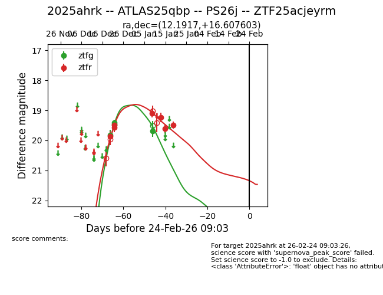
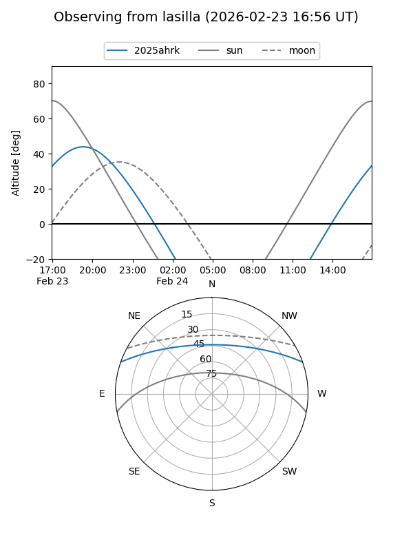
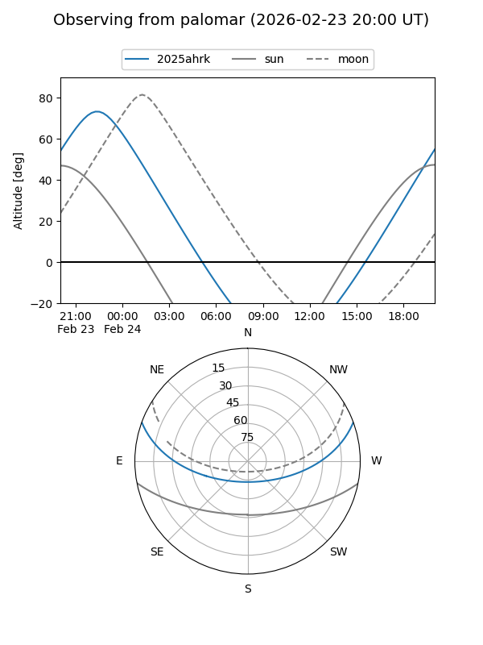
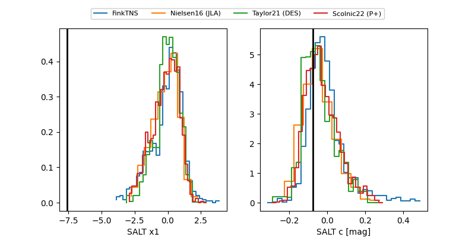

2025ahrk
Target 2025ahrk at 2025-12-21 00:37
Aliases and brokers:
FINK: fink-portal.org/ZTF25acjeyrm
Lasair: lasair-ztf.lsst.ac.uk/objects/ZTF25acjeyrm
ALeRCE: alerce.online/object/ZTF25acjeyrm
TNS: wis-tns.org/object/2025ahrk
YSE: ziggy.ucolick.org/yse/transient_detail/2025ahrk
alt names
ZTF25acjeyrm (ztf,fink_ztf)
2025ahrk (tns,yse)
Coordinates:
equatorial (ra, dec) = 12.1917,+16.60760
equatorial (HMS+DMS) = 00:48:46.01,+16:36:27.37
galactic (l, b) = (122.0064,-46.25934)
Flags:
Photometry:
last ztfg=19.83, ztfr=19.87
1 ztfg, 1 ztfr detections
Lightcurve

Visibility


Additional plots
